WebRTC Details
CSE312 — Web Development
Signaling, NATs, STUN, ICE candidates, and TURN: how two browsers find each other for a peer-to-peer connection
WebRTC
WebRTC
- Need to establish a real-time streaming peer-to-peer connection
- But how?
- Need the IP address of your peer
- Need to agree on the details of the connection
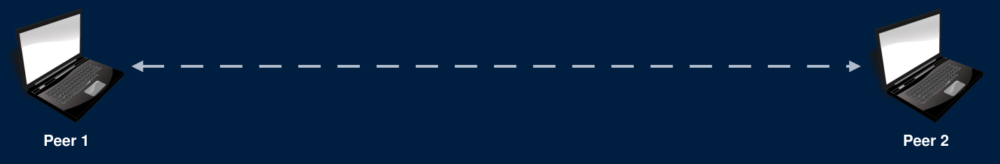
WebRTC - Connecting
- One peer needs to get an offer to the other peer
- This is an offer to establish a connection that contains:
- audio/visual codec, bitrate, etc details (How to interpret the bytes once the streaming starts)
- A username fragment ("ice-ufrag") as a unique identifier
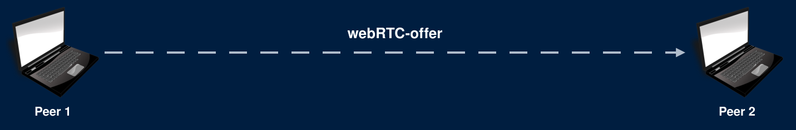
WebRTC - Connecting
- The peer responds with an answer
- The answer contains their audio/visual data
- Contains their own ufrag so the connection can be identified
- Once the answer is received, the peers agree to connect
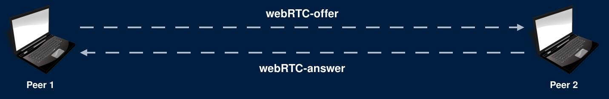
WebRTC - Connecting
- But there's a problem
- How do we send these messages between two peers?
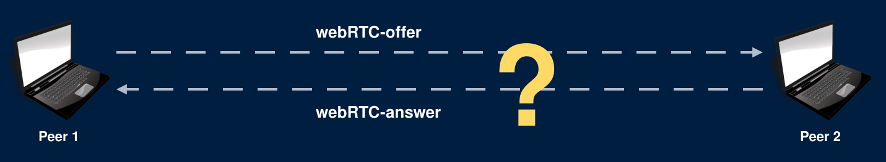
WebRTC - Connecting
- For usual web traffic with a server:
- Type in a domain name or click a link containing a domain name
- Use DNS to lookup the [static] IP address of the server
- Send a request to the IP address on port 80 or 443
WebRTC - Connecting
- For peer-to-peer traffic:
- We need to discover the IP and port of the peer without DNS
- Peer IP/port can change (dynamic IP)
WebRTC - Signalling Server
- Offer and answer are sent through a signaling server
- On the HW - You are the signaling server!!
- Both peers connect to your server
- Send offer/answer to the server and the server forwards the messages to the other peer
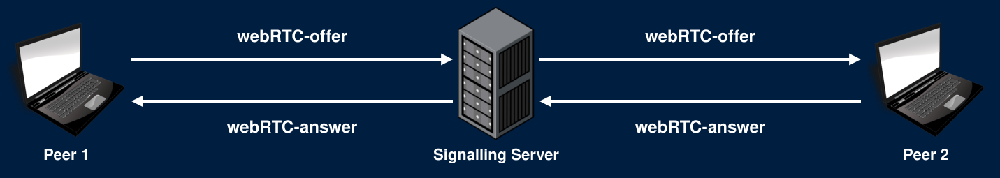
WebRTC - Signalling Server
- We need a method to send these messages
- We'll need a way for the server to be able to send messages to each client in real-time
WebRTC - Signalling Server
- We need a method to send these messages
- We'll need a way for the server to be able to send messages to each client in real-time
- Wow! It's really convenient that we have WebSockets!
WebRTC - Signalling Server
- When your server receives a WebSocket frame containing an offer or answer
- Send the payload to the other peer over their WebSocket
WebRTC - NATs
- We have another issue..
- How do we know the IP address and port for each peer?
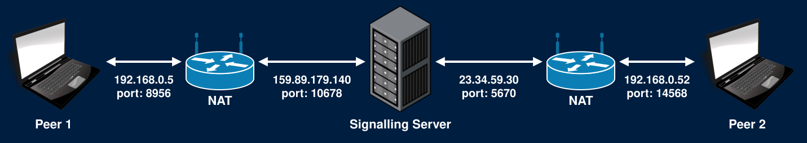
WebRTC - NATs
- Devices are commonly "hidden" behind NAT routers
- Network Address Translation
- With a NAT:
- You have a local IP address for communication on your local network
- When communicating outside your network, the NAT router sends your message using a public IP address and port number
WebRTC - NATs
- With a NAT:
- Many devices on a local network can share a single public IP address
- Each device does not know it's public IP/port used when it communicates to the outside world
- [Also the problem that port-forwarding solves]
WebRTC - STUN Server
- Solution: Use a STUN (Session Traversal Utilities for NAT) Server
- Each peer connects to a STUN server and asks for their public IP/port
- STUN server checks the origin IP/port and informs the client
- We'll use Google's free STUN server (stun.l.google.com:19302)
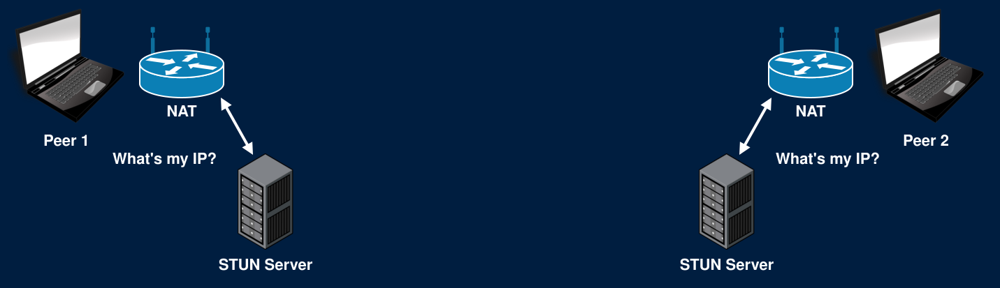
WebRTC - ICE Candidate
- Each peer sends their public IP/port, and connection information, in an ICE (Interactive Connectivity Establishment) candidate message
- Whenever your signaling server receives an ICE candidate, forward it to the other peer
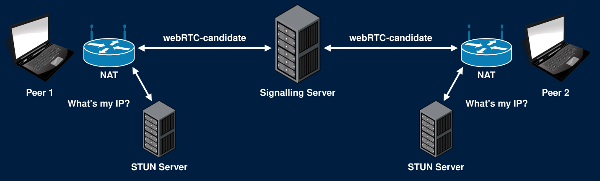
WebRTC - ICE Candidate
- Candidate contains:
- Connection type - UDP, not TCP
- IP/port - Local in this example
- Username fragment - Uniquely identifies the connection
WebRTC - Connection
- And now we can establish a peer-to-peer connection!
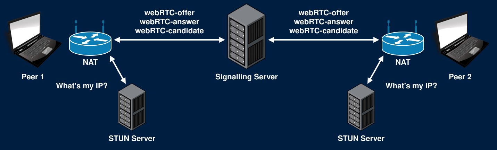
WebRTC - Summary
- One peer sends an offer to the other
- Other peer responds with an answer
- Both peers get their public IP/port from their STUN Servers
- Both peers send their ICE candidates to the other
WebRTC - Summary
- Once the connection is established
- The servers step aside and the clients stream directly to each other
- True peer-to-peer!
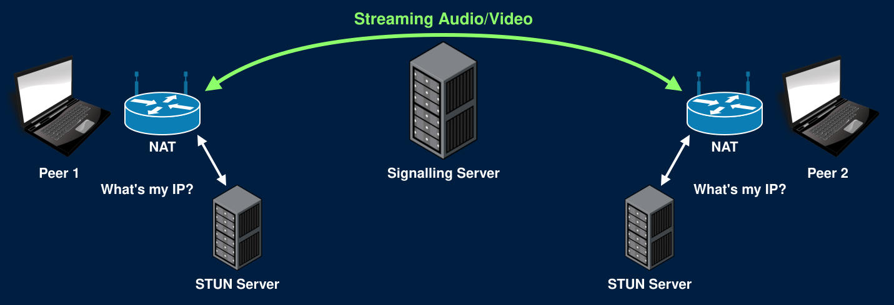
WebRTC - Summary
- Your role in all of this?
- Route the offer/answer/candidate messages between peers
- No need to read/parse/interpret the RTC portion of these messages
- Extract the payload from the WS frame, send it to the appropriate peer as a new WS frame
Only Forward Within a Call
- Each offer, answer, and ICE candidate names the socket it should be forwarded to
- Before forwarding, check that the sender and the recipient are in the same call
- Otherwise any user can send WebRTC messages to any connection on your server
- Spam other users with offers
- Collect other users' IP addresses from the answers and ICE candidates they send back
WebRTC - Restrictions
- The browser will not allow WebRTC connections when connected to a site using HTTP (as opposed to HTTPS)
- Must have an encrypted connection to use WebRTC
- *Unless connecting over localhost (Let's us test locally)
WebRTC - Restrictions
- Sometimes a peer-to-peer connection cannot even be established
- Can have restrictive firewalls
- Dynamic NATs might change your port unexpectedly
- Organizations might block certain traffic on their network
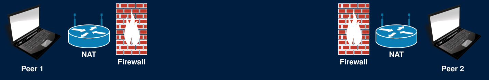
WebRTC - TURN Server
- In cases where peer-to-peer is blocked:
- Use a TURN (Traversals Using Relays around NAT) Server
- After the connection is established using a signaling server, each peer routes their streaming data through a TURN server
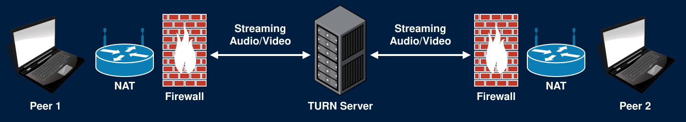
WebRTC - TURN Server
- If you ask me... using a TURN server defeats the purpose of using a peer-to-peer technology
- ... Unless you run your own TURN server!
STUN in Detail
Why Not Use the WebSocket's Address?
- Your signaling server already sees each peer's public IP: the source of their WebSocket connection
- But a NAT maps each socket separately
- The TCP socket for the WebSocket gets one public port
- The UDP socket for the video gets a different one
- Only a packet sent from the video's own UDP socket reveals its public IP and port
- That's what a STUN request is
STUN Messages
- RFC 8489. Runs over UDP, usually on port 3478 (Google's runs on 19302)
- Every message starts with a 20-byte header:
| Bytes | Field |
|---|---|
| 2 | Message type: 0x0001 Binding Request, 0x0101 Binding Success Response |
| 2 | Message length: the number of bytes after the 20-byte header |
| 4 | Magic cookie: always 0x2112A442 |
| 12 | Transaction ID: random, chosen by the client, copied into the response |
- The first 2 bits of every STUN message are 0, and the magic cookie marks it as STUN
- WebRTC sends STUN, its encryption handshake, and the video itself on the same port
Attributes
- After the header comes a list of attributes
- Type (2 bytes), Length (2 bytes), Value (padded to a multiple of 4 bytes)
- A Binding Success Response needs one attribute: XOR-MAPPED-ADDRESS (type
0x0020)
| Bytes | Field |
|---|---|
| 1 | 0x00 |
| 1 | Family: 0x01 for IPv4, 0x02 for IPv6 |
| 2 | X-Port: the port XOR 0x2112 (the first 2 bytes of the magic cookie) |
| 4 | X-Address: the IPv4 address XOR 0x2112A442 |
Why XOR?
- The original STUN sent the address as-is (MAPPED-ADDRESS)
- Some NATs rewrite any 4 bytes in a packet that match their public IP
- Meant to help older protocols that put addresses in their payloads
- They corrupted STUN responses instead
- XOR with a known constant hides the address from those NATs
- Trivial for the client to undo
- The same trick as WebSocket masking: change the bytes on the wire so nothing in between misreads them
Example
- A Binding Request arrives from
23.34.59.30, port5670 - X-Port:
5670 XOR 0x2112=0x1626 XOR 0x2112=0x3734 - X-Address:
0x17223B1E XOR 0x2112A442=0x36309F5C
01 01 00 0C 21 12 A4 42 <the request's 12-byte transaction ID> Header
00 20 00 08 00 01 37 34 36 30 9F 5C XOR-MAPPED-ADDRESS- Message length
0x000C= 12: the attribute's 4-byte type and length, plus its 8-byte value
A STUN Server in Go
conn, err := net.ListenPacket("udp", ":3478")
// handle err
buffer := make([]byte, 1500)
for {
n, addr, err := conn.ReadFrom(buffer)
// addr is the IP and port this packet came from: the answer to "What's my IP?"
// Verify buffer[:n] is a Binding Request, then build the response
conn.WriteTo(response, addr)
}- No connection and no handshake: one packet in, one packet out
- Each packet is one complete message. No buffering!
- Validate everything. Anyone can send you a UDP packet
- The type is
0x0001, the cookie is0x2112A442, and the length matches the bytes you read
- The type is
Using Your STUN Server
- Publish the port for UDP in your compose.yml:
"3478:3478/udp"- Docker publishes TCP unless you say otherwise
- To verify it works:
- Log every Binding Request your server receives
- Look for
typ srflxcandidates in theice_candidatemessages passing through your signaling server chrome://webrtc-internalsshows every candidate the browser gathered
- On localhost, the address your server reports will be a Docker network address, not your public IP. That's expected
ICE Candidate Types
| Type | Address |
|---|---|
host |
The device's own address on its local network |
srflx |
Server reflexive: the public address a STUN server reported |
relay |
An address on a TURN server that relays the traffic |
- The browser gathers every candidate it can, and sends each one through the signaling server
- Both peers try pairs of candidates, and keep the best pair that works
- Usually: host (same network), then srflx (through NATs), then relay (last resort)
Hole Punching
- A NAT drops unexpected incoming packets
- It only lets in replies to something that was sent from inside
- Both peers send packets directly to each other's candidates at the same time
- Each NAT sees an outgoing packet first, so it lets the other peer's packets in
- These connectivity checks are STUN Binding Requests too
- Sent peer-to-peer, and authenticated with the
ice-ufragandice-pwdfrom the offer and answer
- Sent peer-to-peer, and authenticated with the
- STUN is used twice: once to learn your public address, then again to test every candidate pair
When STUN Isn't Enough
- Hole punching works when the NAT uses the same public port for every destination
- A symmetric NAT picks a new public port for each destination
- The port the STUN server saw is not the port the peer will see
- The peer's packets go to the wrong port, and are dropped
- Common on corporate and mobile networks
- The fallback: a TURN server